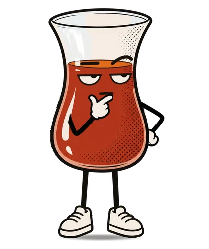

Görev 1
Tavla
Tek index.html, dış kütüphane yok: Türk kurallarıyla, bilgisayara karşı oynanan tam bir tavla. Kapı, kırma, bardan giriş, çift zar.
- 20 Açılıyor ve oynanıyor
- 35 Kural doğruluğu
- 15 Bilgisayarın oyunu
- 15 Görsel ve his
- 15 Hata ve donma yok
Demli Testi kanalın imza formatı. Her modele aynı görevleri, kelimesi kelimesine aynı promptla veriyorum. Puanı önceden yazılmış bir cetvel verir; benim keyfim değil.

Pazarlık yok. Bir model kuralı esnetirse, puanı da esner.
Her görev yüz puan. Bardaktaki her katman bir kalem; kalın katman, ağır kalem.
Görev 1
Tek index.html, dış kütüphane yok: Türk kurallarıyla, bilgisayara karşı oynanan tam bir tavla. Kapı, kırma, bardan giriş, çift zar.
Görev 2
Boğaz'da vapuru iskeleye yanaştırma oyunu. Akıntı sürükler; gaz ve dümenle yumuşak yanaşan puan alır. En az üç iskele.
Görev 3
Lale, karanfil, rumi ve hatayi motifleriyle simetrik İznik deseni üreten araç. Klasik palet, simetri seçimi, PNG indirme.
Model puanı üç görevin ortalaması. Kazananı renk değil, puan gösterir.
| Model | Tavla | Vapur yanaştırma | İznik çini | Ortalama |
|---|---|---|---|---|
| Claude Fable 5.2Claude Code | — | — | — | — |
| Claude Opus 5.5Claude Code | — | — | — | — |
| Claude Sonnet 5.5Claude Code | — | — | — | — |
| GPT 6.1 SolCodex CLI | — | — | — | — |
| GPT 6 AstraCodex CLI | — | — | — | — |
Tablo 27 Kasım’de dolar. Boş hücre “henüz demlenmedi” demek; sıfır puan değil.
Her model için bir fiş: ne kadar sürdü, kaç deneme yaptı, ne kadar harcadı. Claude ve Codex tokenı farklı sayar; o yüzden fişler yan yana kıyaslanmaz.
Fişler test koşulunca dolar. Şimdilik boş fişin nasıl okunacağını gösteriyorum.
Prompt, ham çıktı, ekran kaydı ve puan aynı repoda. Aynı metni kendi modeline ver, sonucu kıyasla.
demli-arena/
└─ testler/
└─ <tarih>-<görev>/
├─ prompt.md
├─ sonuclar/<model>.html
├─ adisyon.json
├─ ekran/
└─ kayit/